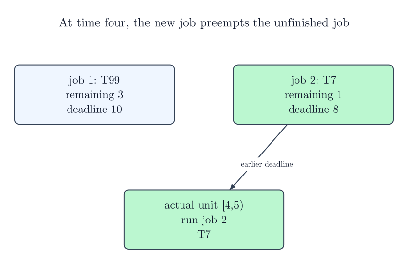
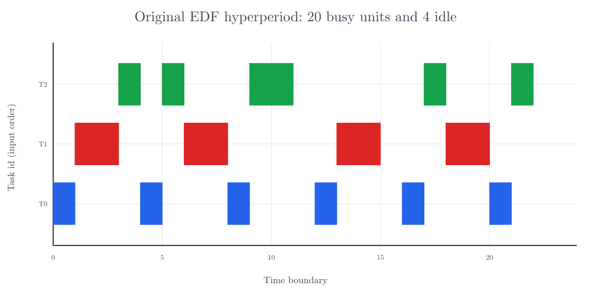
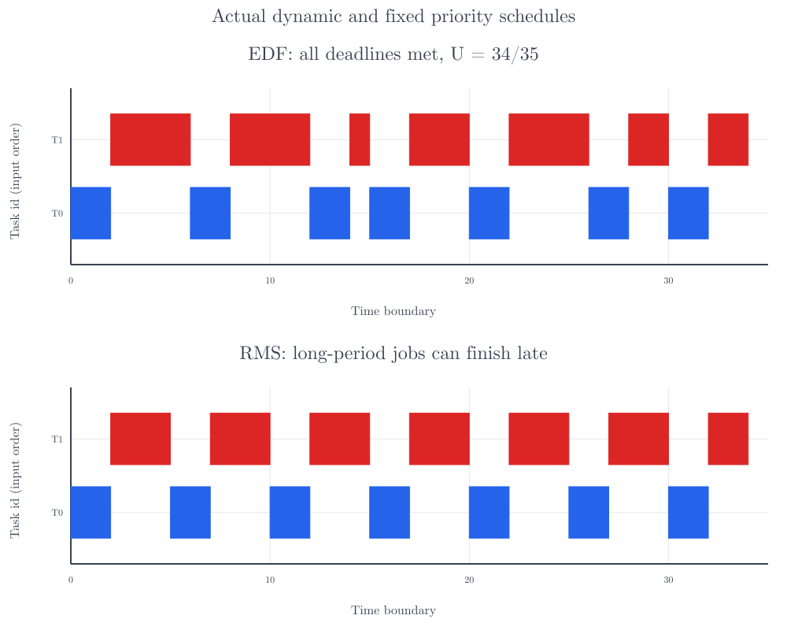
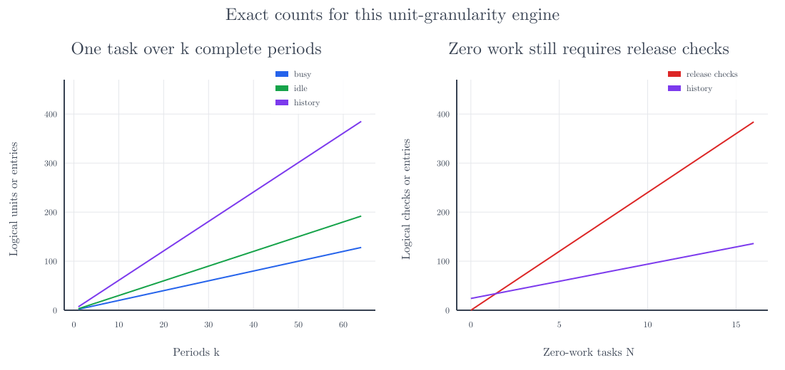
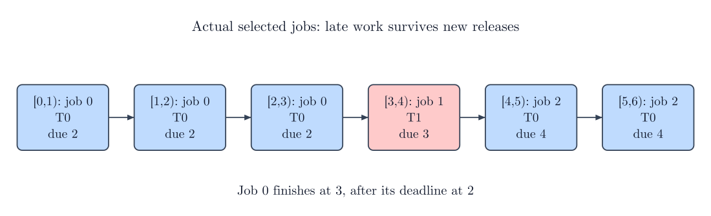

Earliest-Deadline-First: Actual Jobs, Preemption and Boundary Deadlines
Abstract
Given recurring jobs with execution budgets and deadlines, we want one processor to complete every job on time. A task may be ready while another is running, so its scheduling priority must account for when its current job is due. Earliest-deadline-first chooses the nearest absolute deadline. We inspect an actual preemption, retain the original three-task hyperperiod, compare EDF and fixed priorities, and check exact work families. The implementation keeps overdue jobs, checks horizon-boundary deadlines and tests utilization without a tolerance.
A newly released job can preempt the running job
Let T7 have period four and cost one, and T99 period ten and cost six. Both release at zero. T7 runs first, then T99 executes three units. At time four, the next T7 job is due at eight, earlier than T99's deadline ten. EDF preempts T99, runs T7 for one unit, then resumes T99. The ten-unit trace below records the actual selected job ids. Task ids are labels; input position breaks priority ties.
#include <dm/dm.hpp>
int main(){
std::filesystem::create_directories("build");
const auto t=dm::algorithms::rt_trace({{7,4,1},{99,10,6}},10);
std::print("Tiny: {} jobs; busy units {}; idle units {}; preemptions {}; deadline missed {}.\n\n",t.jobs.size(),t.work.busy_ticks,t.work.idle_ticks,t.work.preemptions,t.schedule.deadline_missed);
std::print("| unit start | selected job | selected task |\n| ---: | :--- | :--- |\n");
const auto idle=std::numeric_limits<std::size_t>::max();
for(std::size_t k=0;k<t.tick_jobs.size();++k){const auto id=t.tick_jobs[k];if(id==idle)std::print("| {} | idle | idle |\n",k);else std::print("| {} | {} | T{} |\n",k,id,t.tasks.at(t.jobs.at(id).task_index).id);}
const auto old=t.tick_jobs.at(3),selected=t.tick_jobs.at(4);const auto& a=t.jobs.at(old);const auto& b=t.jobs.at(selected);
const auto remaining=[&](std::size_t id){return t.tasks.at(t.jobs.at(id).task_index).wcet-std::count(t.tick_jobs.begin(),t.tick_jobs.begin()+4,id);};
std::print("\nAt t=4: old job {} has {} units remaining, deadline {}; selected job {} has {} unit remaining, deadline {}.\n",old,remaining(old),a.deadline,selected,remaining(selected),b.deadline);
dm::graphics::Diagram d(64,1100);dm::graphics::DiagramNodeStyle box;box.width=5.1;box.height=1.9;box.font_size=23;
d.node("old",{0,0},std::format("job {}: T{}\nremaining {}\ndeadline {}",old,t.tasks.at(a.task_index).id,remaining(old),a.deadline),box);
box.fill={187,247,208};d.node("new",{7,0},std::format("job {}: T{}\nremaining {}\ndeadline {}",selected,t.tasks.at(b.task_index).id,remaining(selected),b.deadline),box)
.node("run",{3.5,-4},std::format("actual unit [4,5)\nrun job {}\nT{}",selected,t.tasks.at(b.task_index).id),box)
.edge("new","run","earlier deadline").text({3.5,2.3},"At time four, the new job preempts the unfinished job",25).save_svg("build/edf_tiny.svg");
}Tiny: 4 jobs; busy units 9; idle units 1; preemptions 1; deadline missed false.
| unit start | selected job | selected task |
|---|---|---|
| 0 | 0 | T7 |
| 1 | 1 | T99 |
| 2 | 1 | T99 |
| 3 | 1 | T99 |
| 4 | 2 | T7 |
| 5 | 1 | T99 |
| 6 | 1 | T99 |
| 7 | 1 | T99 |
| 8 | 3 | T7 |
| 9 | idle | idle |
At t=4: old job 1 has 3 units remaining, deadline 10; selected job 2 has 1 unit remaining, deadline 8.

Define the model before applying the theorem
Each task i releases at times 0,T_i,2T_i,..., with positive integer period T_i, nonnegative integer budget C_i and relative deadline T_i. A job released at r is due at r+T_i. This model has one fully preemptive processor, independent tasks, no blocking, no release jitter and zero scheduling/context-switch overhead. The simulation executes the full budget, rather than estimating worst-case execution times from data. There is no natural observational dataset for these assumptions; explicit task sets make the claims checkable.
EDF chooses the ready unfinished job with the smallest absolute deadline. Ties use input task position, then release order within a task. External task-id values do not affect priority. A zero-work job finishes at its release. Execution occupies half-open integer units [t,t+1), and finishing exactly at a deadline is on time. The finite simulation releases jobs before H and checks deadlines through H, including H itself. A job due after H can remain unfinished without a miss yet being observed.
Utilization is
Long-run demand makes U<=1 necessary: over a sufficiently long interval, released work grows as U times its length, while capacity grows as the length. For this implicit-deadline model it is also sufficient under EDF. One proof sketch considers the first missed deadline d and the maximal busy interval [a,d] serving jobs due no later than d. An implicit-deadline task can contribute at most floor((d−a)/T_i) such jobs released within that interval. Their total demand is at most (d−a)U, which cannot exceed capacity when U<=1, contradicting a miss. The interval begins with no carried job eligible for that deadline. These assumptions are essential; U<=1 alone does not cover blocking, arbitrary deadlines or multiple CPUs.
EDF's priority rule is optimal for independent preemptible jobs: in a feasible schedule, exchange its first differing execution unit with a later unit assigned to the earliest-deadline ready job. That job moves earlier; the displaced ready job moves no later than the earlier job's deadline, which is no later than its own. Repeating the exchange yields EDF without introducing a miss. The argument concerns ideal processor service, rather than a real operating system's overheads.
The core's edf_schedulable() compares exact rational demand using integer limbs, so equality and very small overloads do not depend on a floating tolerance. rt_utilization() remains a floating display value. The exact sum implementation uses unreduced denominators: worst-case O(N²) native word operations and O(N) integer words for N int-sized task records.
Preserve the original three-task hyperperiod
The original tasks are (period,cost)=(4,1),(6,2),(8,2). Their utilization is 1/4+2/6+2/8=5/6, and their hyperperiod is lcm(4,6,8)=24. In one hyperperiod they release 6+4+3=13 jobs and require 6+8+6=20 processor units, leaving four idle units. The new core plotting function maps opaque task labels to rows and renders the actual merged intervals.
#include <dm/dm.hpp>
int main(){
std::filesystem::create_directories("build");const std::vector<dm::algorithms::RTTask> tasks{{0,4,1},{1,6,2},{2,8,2}};
const auto t=dm::algorithms::rt_trace(tasks,24);
if(t.work.jobs_released!=13||t.work.jobs_completed!=13||t.work.busy_ticks!=20||t.work.idle_ticks!=4||t.schedule.deadline_missed)throw std::runtime_error("original hyperperiod identity failed");
std::print("Original tasks: utilization {:.6f}; EDF schedulable {}; horizon 24; deadline missed {}.\n",dm::algorithms::rt_utilization(tasks),dm::algorithms::edf_schedulable(tasks),t.schedule.deadline_missed);
std::print("{} jobs released; {} completed; {} busy units; {} idle units.\n\n",t.work.jobs_released,t.work.jobs_completed,t.work.busy_ticks,t.work.idle_ticks);
std::print("| start | end | task |\n| ---: | ---: | :--- |\n");
for(const auto& s:t.schedule.timeline){if(s.id==std::numeric_limits<std::size_t>::max())std::print("| {} | {} | idle |\n",s.start,s.end);else std::print("| {} | {} | T{} |\n",s.start,s.end,s.id);}
std::print("\n| job | task | release | deadline | executed | completion | missed |\n| ---: | :--- | ---: | ---: | ---: | ---: | :--- |\n");
for(std::size_t i=0;i<t.jobs.size();++i){const auto& j=t.jobs[i];std::print("| {} | T{} | {} | {} | {} | {} | {} |\n",i,t.tasks.at(j.task_index).id,j.release,j.deadline,j.executed,j.completion,j.missed);}
auto p=dm::algorithms::plot_rt_schedule(tasks,t.schedule);p.title("Original EDF hyperperiod: 20 busy units and 4 idle").size(1000,500).save_svg("build/edf_original.svg");
}Original tasks: utilization 0.833333; EDF schedulable true; horizon 24; deadline missed false. 13 jobs released; 13 completed; 20 busy units; 4 idle units.
| start | end | task |
|---|---|---|
| 0 | 1 | T0 |
| 1 | 3 | T1 |
| 3 | 4 | T2 |
| 4 | 5 | T0 |
| 5 | 6 | T2 |
| 6 | 8 | T1 |
| 8 | 9 | T0 |
| 9 | 11 | T2 |
| 11 | 12 | idle |
| 12 | 13 | T0 |
| 13 | 15 | T1 |
| 15 | 16 | idle |
| 16 | 17 | T0 |
| 17 | 18 | T2 |
| 18 | 20 | T1 |
| 20 | 21 | T0 |
| 21 | 22 | T2 |
| 22 | 24 | idle |
| job | task | release | deadline | executed | completion | missed |
|---|---|---|---|---|---|---|
| 0 | T0 | 0 | 4 | 1 | 1 | false |
| 1 | T1 | 0 | 6 | 2 | 3 | false |
| 2 | T2 | 0 | 8 | 2 | 6 | false |
| 3 | T0 | 4 | 8 | 1 | 5 | false |
| 4 | T1 | 6 | 12 | 2 | 8 | false |
| 5 | T0 | 8 | 12 | 1 | 9 | false |
| 6 | T2 | 8 | 16 | 2 | 11 | false |
| 7 | T0 | 12 | 16 | 1 | 13 | false |
| 8 | T1 | 12 | 18 | 2 | 15 | false |
| 9 | T0 | 16 | 20 | 1 | 17 | false |
| 10 | T2 | 16 | 24 | 2 | 22 | false |
| 11 | T1 | 18 | 24 | 2 | 20 | false |
| 12 | T0 | 20 | 24 | 1 | 21 | false |

At boundary 24 every released job has finished. The synchronous arrival pattern then repeats, so this deterministic hyperperiod returns to the same empty-ready state. That supplies a repeat argument for this task set. A general clean finite prefix, without such a state argument, is not proof that future deadlines will all be met.
Dynamic priorities and the RMS bound
Rate-monotonic scheduling fixes priorities by period. EDF can instead keep an older long-period job ahead of a newly released short-period job when the older job's absolute deadline is nearer. For tasks (5,2),(7,4), U=34/35<1, so EDF is feasible under the model. RMS misses a deadline: its first long-period job needs four units but receives only three by time seven. The figure compares both actual traces over hyperperiod 35.
The Liu-Layland sufficient RMS bound for N tasks is N(2^(1/N)−1), tending to log(2), about 0.693. This is a guarantee threshold over task sets, not a maximum utilization that RMS can possibly schedule. Harmonic tasks (4,2),(8,4) demonstrate that distinction: U=1 exceeds the two-task bound, yet both jobs finish over hyperperiod eight and the state repeats. The numerical RMS bound screen is not an exact necessary feasibility test and has floating rounding near its bound.
#include <dm/dm.hpp>
int main(){
std::filesystem::create_directories("build");const std::vector<dm::algorithms::RTTask> tasks{{0,5,2},{1,7,4}};
const auto edf=dm::algorithms::rt_trace(tasks,35),rms=dm::algorithms::rt_trace(tasks,35,dm::algorithms::RTPolicy::rate_monotonic);
if(!dm::algorithms::edf_schedulable(tasks)||edf.schedule.deadline_missed||!rms.schedule.deadline_missed)throw std::runtime_error("policy comparison failed");
std::print("Comparison utilization {:.6f}; two-task RMS sufficient bound {:.6f}.\n\n",dm::algorithms::rt_utilization(tasks),dm::algorithms::rate_monotonic_bound(2));
std::print("| policy | jobs | completed by H | busy units | missed deadlines through H | preemptions |\n| :--- | ---: | ---: | ---: | ---: | ---: |\n");
for(const auto& [name,t]:std::vector<std::pair<std::string,dm::algorithms::RTTrace>>{{"EDF",edf},{"RMS",rms}})std::print("| {} | {} | {} | {} | {} | {} |\n",name,t.work.jobs_released,t.work.jobs_completed,t.work.busy_ticks,t.work.deadline_misses,t.work.preemptions);
const auto first=std::find_if(rms.jobs.begin(),rms.jobs.end(),[](const auto& j){return j.missed;});
std::print("\nFirst RMS miss: T{}, release {}, deadline {}, eventual completion {}.\n",tasks.at(first->task_index).id,first->release,first->deadline,first->completion);
const std::vector<dm::algorithms::RTTask> harmonic{{0,4,2},{1,8,4}};const auto h=dm::algorithms::rt_trace(harmonic,8,dm::algorithms::RTPolicy::rate_monotonic);
std::print("Harmonic RMS: utilization {:.6f}; sufficient-bound screen {}; missed {}; {} of {} jobs complete by hyperperiod eight.\n",dm::algorithms::rt_utilization(harmonic),dm::algorithms::rate_monotonic_schedulable(harmonic),h.schedule.deadline_missed,h.work.jobs_completed,h.work.jobs_released);
if(h.schedule.deadline_missed||h.work.jobs_completed!=h.work.jobs_released)throw std::runtime_error("harmonic repetition failed");
auto a=dm::algorithms::plot_rt_schedule(tasks,edf.schedule);a.title("EDF: all deadlines met, U = 34/35");
auto b=dm::algorithms::plot_rt_schedule(tasks,rms.schedule);b.title("RMS: long-period jobs can finish late");
dm::graphics::RLayout::create(2,1).add(a).add(b).size(1000,800).title("Actual dynamic and fixed priority schedules").fit_panels().save_svg("build/edf_vs_rms.svg");
}Comparison utilization 0.971429; two-task RMS sufficient bound 0.828427.
| policy | jobs | completed by H | busy units | missed deadlines through H | preemptions |
|---|---|---|---|---|---|
| EDF | 12 | 12 | 34 | 0 | 2 |
| RMS | 12 | 12 | 34 | 1 | 5 |
First RMS miss: T1, release 0, deadline 7, eventual completion 8. Harmonic RMS: utilization 1.000000; sufficient-bound screen false; missed false; 3 of 3 jobs complete by hyperperiod eight.

Check exact finite work and history counts
For one task of period five and cost two over H=5k, there are k releases/completions, 2k busy units, 3k idle units and no preemptions. The capture contains one task, 5k selections and k job records, hence 6k+1 logical entries. These are exact counts, not measured CPU time.
For N zero-work tasks of period four and H=24, all 6N releases complete at once, the ready queue stays empty, and all 24 units are idle. This unit-granularity engine still performs 24N release checks; its captured history contains N+24+6N=7N+24 entries. It does not skip to the next event.
#include <dm/dm.hpp>
int main(){
std::filesystem::create_directories("build");std::vector<double>x,busy,idle,history,nvalues,checks,zero_history;
std::print("| periods k | H | jobs | busy | idle | preemptions | capture |\n| ---: | ---: | ---: | ---: | ---: | ---: | ---: |\n");
for(std::size_t k:{1,2,4,8,16,32,64}){const auto t=dm::algorithms::rt_trace({{7,5,2}},int(5*k));
if(t.work.jobs_released!=k||t.work.jobs_completed!=k||t.work.busy_ticks!=2*k||t.work.idle_ticks!=3*k||t.work.preemptions||t.work.deadline_misses||t.captured_entries!=6*k+1)throw std::runtime_error("period family failed");
std::print("| {} | {} | {} | {} | {} | {} | {} |\n",k,t.horizon,t.work.jobs_released,t.work.busy_ticks,t.work.idle_ticks,t.work.preemptions,t.captured_entries);
x.push_back(k);busy.push_back(t.work.busy_ticks);idle.push_back(t.work.idle_ticks);history.push_back(t.captured_entries);}
std::print("\n| zero-work tasks N | release checks | released and completed jobs | idle units | capture |\n| ---: | ---: | ---: | ---: | ---: |\n");
for(std::size_t n:{0,1,2,4,8,16}){std::vector<dm::algorithms::RTTask> tasks;for(std::size_t i=0;i<n;++i)tasks.push_back({i,4,0});const auto t=dm::algorithms::rt_trace(tasks,24);
if(t.work.release_checks!=24*n||t.work.jobs_released!=6*n||t.work.jobs_completed!=6*n||t.work.busy_ticks||t.work.idle_ticks!=24||t.work.peak_ready||t.captured_entries!=7*n+24)throw std::runtime_error("zero-work family failed");
std::print("| {} | {} | {} | {} | {} |\n",n,t.work.release_checks,t.work.jobs_released,t.work.idle_ticks,t.captured_entries);
nvalues.push_back(n);checks.push_back(t.work.release_checks);zero_history.push_back(t.captured_entries);}
auto a=dm::graphics::RPlot::create();a.line(x,busy,"busy",{37,99,235}).line(x,idle,"idle",{22,163,74}).line(x,history,"history",{124,58,237}).title("One task over k complete periods").x_label("Periods k").y_label("Logical units or entries").y_limits(0,470);
auto b=dm::graphics::RPlot::create();b.line(nvalues,checks,"release checks",{220,38,38}).line(nvalues,zero_history,"history",{124,58,237}).title("Zero work still requires release checks").x_label("Zero-work tasks N").y_label("Logical checks or entries").y_limits(0,470);
dm::graphics::RLayout::create(1,2).add(a).add(b).size(1100,520).title("Exact counts for this unit-granularity engine").fit_panels().save_svg("build/edf_work.svg");
}| periods k | H | jobs | busy | idle | preemptions | capture |
|---|---|---|---|---|---|---|
| 1 | 5 | 1 | 2 | 3 | 0 | 7 |
| 2 | 10 | 2 | 4 | 6 | 0 | 13 |
| 4 | 20 | 4 | 8 | 12 | 0 | 25 |
| 8 | 40 | 8 | 16 | 24 | 0 | 49 |
| 16 | 80 | 16 | 32 | 48 | 0 | 97 |
| 32 | 160 | 32 | 64 | 96 | 0 | 193 |
| 64 | 320 | 64 | 128 | 192 | 0 | 385 |
| zero-work tasks N | release checks | released and completed jobs | idle units | capture |
|---|---|---|---|---|
| 0 | 0 | 0 | 24 | 24 |
| 1 | 24 | 6 | 24 | 31 |
| 2 | 48 | 12 | 24 | 38 |
| 4 | 96 | 24 | 24 | 52 |
| 8 | 192 | 48 | 24 | 80 |
| 16 | 384 | 96 | 24 | 136 |

With N tasks, H units, J releases and at most B ready unfinished jobs, the engine requires O(H(N+1)+(H+J)log(B+1)) unit-word work, plus task validation. It owns O(N+B) runtime counters/ready jobs and the merged timeline, which can have H slices. Completed jobs leave the ready queue; o unfinished job is discarded. Trace capture adds O(N+H+J) entries. Ideal feasibility assumes no scheduling overhead; these implementation counts do not estimate a real system's overhead or certify a measured WCET.
Overdue work, the final boundary and capture limits
For tasks (2,3),(3,1), overload is unavoidable. At horizon two, the first three-unit job is unfinished and due exactly then: this is already a miss. Keeping the run going does not erase that job. It runs its third unit in [2,3), completes late at three, and only then yields to the other task's earlier-due waiting job. The old implementation overwrote remaining work at a new release and omitted the check at H; the core now retains backlog and includes that final boundary.
The owned trace counts N task records, H actual selected-job ids and J released-job records. The complete N+H+J count and container geometry are checked before owned copies/history allocation. The cap defaults to one million; zero disables only the optional quota. It excludes result-timeline copies, the working heap, scalar fields, vector capacity and allocator bytes, so it is not a peak-memory bound. Failures return no partial trace. Ordinary simulation/work calls have no optional quota.
#include <dm/dm.hpp>
int main(){
std::filesystem::create_directories("build");
const auto t=dm::algorithms::rt_trace({{0,2,3},{1,3,1}},6);
std::print("Overload: {} jobs; {} completed; {} missed deadlines through H=6; selected jobs:",t.jobs.size(),t.work.jobs_completed,t.work.deadline_misses);for(auto id:t.tick_jobs)std::print(" {}",id);std::print(".\n\n");
std::print("| job | task | release | deadline | executed | completion (-1 pending) | missed |\n| ---: | :--- | ---: | ---: | ---: | ---: | :--- |\n");
for(std::size_t id=0;id<t.jobs.size();++id){const auto& j=t.jobs[id];std::print("| {} | T{} | {} | {} | {} | {} | {} |\n",id,t.tasks.at(j.task_index).id,j.release,j.deadline,j.executed,j.completion,j.missed);}
const auto before=dm::algorithms::rt_trace({{7,2,3}},1),at=dm::algorithms::rt_trace({{7,2,3}},2,dm::algorithms::RTPolicy::earliest_deadline,4);
int rejected=0;try{(void)dm::algorithms::rt_trace({{7,2,3}},2,dm::algorithms::RTPolicy::earliest_deadline,3);}catch(const std::length_error&){++rejected;}
std::print("\nMiss before deadline H=1 {}; at deadline H=2 {}; exact entries {}; disabled-cap entries {}; one-short rejections {}/1.\n",before.schedule.deadline_missed,at.schedule.deadline_missed,at.captured_entries,dm::algorithms::rt_trace({{7,2,3}},2,dm::algorithms::RTPolicy::earliest_deadline,0).captured_entries,rejected);
const int big=std::numeric_limits<int>::max();const std::vector<dm::algorithms::RTTask> tiny_overload{{0,big,big},{1,big,1}};
std::print("Exact overload 1+1/INT_MAX: display {:.12f}; EDF schedulable {}.\n",dm::algorithms::rt_utilization(tiny_overload),dm::algorithms::edf_schedulable(tiny_overload));
const auto maximum=std::numeric_limits<std::size_t>::max();int invalid=0;
for(const auto& tasks:std::vector<std::vector<dm::algorithms::RTTask>>{{{0,0,1}},{{0,-1,0}},{{0,2,-1}},{{0,2,0},{0,3,0}},{{maximum,2,0}}})try{(void)dm::algorithms::edf_simulate(tasks,0);}catch(const std::invalid_argument&){++invalid;}
try{(void)dm::algorithms::edf_simulate({},-1);}catch(const std::invalid_argument&){++invalid;}
std::print("Invalid period/work/duplicate-id/idle-id/horizon rejections {}/6; empty zero-horizon capture {}.\n",invalid,dm::algorithms::rt_trace({},0).captured_entries);
dm::graphics::Diagram d(64,1100);dm::graphics::DiagramNodeStyle box;box.width=2.5;box.height=1.8;box.font_size=22;
for(std::size_t k=0;k<t.tick_jobs.size();++k){const auto id=t.tick_jobs[k];const auto& j=t.jobs.at(id);box.fill=j.task_index==0?dm::graphics::RGB{191,219,254}:dm::graphics::RGB{254,202,202};
d.node(std::to_string(k),{3.2*k,0},std::format("[{},{}): job {}\nT{}\ndue {}",k,k+1,id,t.tasks.at(j.task_index).id,j.deadline),box);if(k)d.edge(std::to_string(k-1),std::to_string(k));}
d.text({8,2.5},"Actual selected jobs: late work survives new releases",25).text({8,-2},"Job 0 finishes at 3, after its deadline at 2",23).save_svg("build/edf_boundaries.svg");
}Overload: 5 jobs; 2 completed; 5 missed deadlines through H=6; selected jobs: 0 0 0 1 2 2.
| job | task | release | deadline | executed | completion (-1 pending) | missed |
|---|---|---|---|---|---|---|
| 0 | T0 | 0 | 2 | 3 | 3 | true |
| 1 | T1 | 0 | 3 | 1 | 4 | true |
| 2 | T0 | 2 | 4 | 2 | -1 | true |
| 3 | T1 | 3 | 6 | 0 | -1 | true |
| 4 | T0 | 4 | 6 | 0 | -1 | true |
Miss before deadline H=1 false; at deadline H=2 true; exact entries 4; disabled-cap entries 4; one-short rejections 1/1. Exact overload 1+1/INT_MAX: display 1.000000000466; EDF schedulable false. Invalid period/work/duplicate-id/idle-id/horizon rejections 6/6; empty zero-horizon capture 0.

Unique task ids other than SIZE_MAX prevent confusing a task with idle execution. Periods must be positive, budgets nonnegative and horizons nonnegative; these checks apply even at horizon zero. Deadlines use a wider integer than the input horizon to avoid release-plus-period overflow. The native plotting function validates interval shape and ids but does not certify demand or verdicts in arbitrarily edited caller results.
What the examples establish
EDF's exact utilization test applies to the stated implicit-deadline processor model. Actual job evidence explains preemption, confirms the original hyperperiod and distinguishes dynamic deadlines from fixed period priorities. Overload remains visible through late completions, and boundary H belongs to deadline checking. The counter sweeps describe this implementation's finite work and history, while timing guarantees remain conditional on the ideal task model and its measured budgets.
References
- C. L. Liu and J. W. Layland (1973), “Scheduling Algorithms for Multiprogramming in a Hard-Real-Time Environment”, Journal of the ACM 20(1), 46–61, [doi:10.1145/321738.321743](https://doi.org/10.1145/321738.321743). The [NASA/JPL publication record](https://ntrs.nasa.gov/citations/19730036159) describes the fixed-priority utilization bound and deadline-based dynamic priority result. The examples use the synchronous integer, implicit-deadline special case with free preemption.